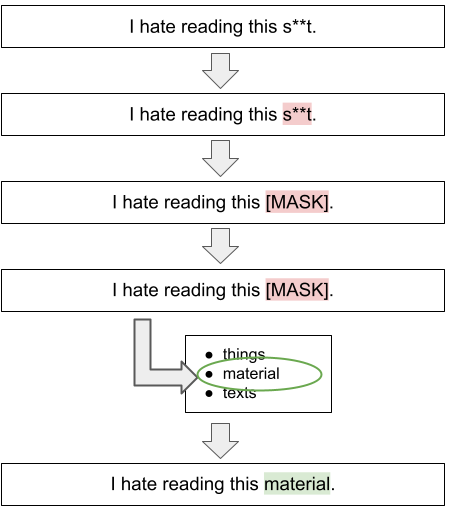
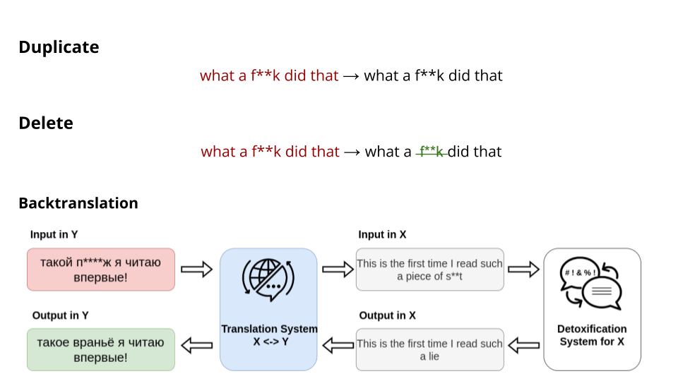
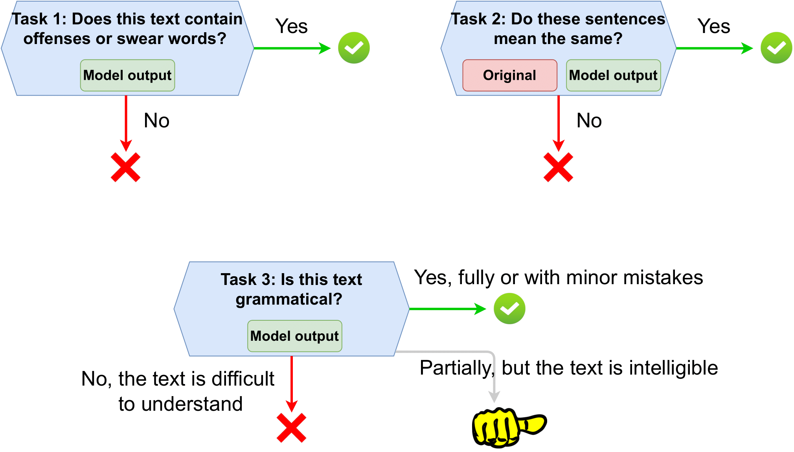

Multilingual Text Detoxification 2024
Synopsis
- Task: Given a toxic piece of text, re-write it in a non-toxic way while saving the main content as much as possible.
- Input: toxic sentences in multiple languages from all over the globe: English, Russian, Ukrainian, German, Spanish, Chinese, Amharic, Arabic, and Hindi.
- Output: non-toxic version in the corresponding language.
- Evaluation: automatic and manual evaluation based on three parameters: (i) style transfer accuracy; (ii) content preservation; (iii) fluency.
- Submission: tira.io as a software submission.
- Main links: [CLEF registration] [data] [baselines] [leaderboard] [google group]
Task
Identification of toxicity in user texts is an active area of research. Today, social networks such as Facebook, Instagram are trying to address the problem of toxicity. However, they usually simply block such kinds of texts. We suggest a proactive reaction to toxicity from the user. Namely, we aim at presenting a neutral version of a user message which preserves meaningful content. We denote this task as *detoxification*.
Detoxification examples in English:
| Toxic | Detoxified |
|---|---|
| he had steel b*lls too! | ->he was brave too! |
| delete the page and sh*t up | ->delete the page |
| what a chicken cr*p excuse for a reason. | ->what a bad excuse for a reason. |
In this competition, we suggest you to create detoxification systems for 9 languages from several linguitic families: English, Russian, Ukrainian, German, Spanish, Chinese, Amharic, Arabic, and Hindi. However, the availability of training corpora will differ between the languages. For English and Russian, the parallel corpora of several thousand of toxic-detoxified pairs (as presented above) are available. So, you can fine-tune text generation models on them. For other languages, for the dev phase, no such corpora will be provided. The main challenge of this competition will be to perform an unsupersived and cross-lingual detoxification.
Methodology
Unsupervised Methods
For the majority of the cases and languages, there is not parallel corpus for the detoxification task. For this reason, we create our competition to recreate the real-life conditions. Some examples of stong unserpvised methods:
- CondBERT [2,3]: using Masked Language Modeling, mask toxic words in a sentence and rerank the candidates from LM based on their non-toxicity scores.
- ParaGedi [3]: the detoxification task is viewed as paraphrasing task, but during the generation step toxicity scores of the next token prediction are also taken into account.

For the case, where for some language a detoxification corpus or/and model are available (i.e. English), you can use such methods as Backtranslation, Translation of the training corpus to the target language, or Adapter layers. Please, refer to [6] for the detailed explanations of the suggested ideas of cross-lingual detoxification knowledge transfer.
Supervised Methods
If a parallel corpus of toxic-neutral pairs is already available (as, in our case, for English and Russian), then you can fine-tune any text generation model. You can refer to the example of ruT5 model for detoxification example from the previous RUSSE-2022 competition.
Baselines

We provide three baslines:- Duplicate: a simple duplication of the toxic input.
- Delete: elimination of a toxic keywords based on a predifined dictionary for each language.
- Backtranslation: a more sophisticated cross-lingual transfer method. Translate the input to the language for which powerful detoxification model in available (i.e. English), perform detoxification, and translate back to the target language.
Data
ParaDetox datasets for English and Russian are already available. Please, refer to [1] and [4] about more details of the corpora collection. **For each** language, we will provide 1k parallel pairs which will be divided into dev and test phases.
Definition of toxiciy
One of the crucial points in this task is to have a common ground on how to estimate if the text is toxic or not. In our task, we will work only with explicit types of toxicity—obvious present of obscene and rude lexicon where still there is meaningful neutral content present—and do not work with implicit types—like sarcasm, passive aggressiveness, or direct hate to some group where no neutral content can be found. Such implicit toxicity types are challenging to be detoxified so the intent will indeed become non-toxic (i.e. try to detoxify the sentence "I h*te all immigrants, f*ck you all!"). For this reason, we tried to pick for our datasets the sentences with explicit toxicity where the main intent is still non-toxic. However, toxicity can be quite a subjective intent. We hope, that we will agree on the majority of the cases what should be toxic or not. In the end, the main goal is to make the texts and the world at least somehow less toxic ;)
Evaluation
Development Phase

For the whole competition, the automatic evaluation metrics set will be available. We provide the multilingual automatic evaluation pipeline based on main three parameters:
- Style Transfer Accuracy (STA): Given the generated paraphrase, classify if the style of the new text – toxic or neutral. For this, multilingual toxicity binary classifier will be used.
- Content preservation (SIM): Given two texts (original toxic sentence and generated paraphrase), evaluate the similarity of their content. We calculate it as cosine similarity between LaBSe embeddings.
- Fluency task (FL): The output should be no less fluent then the input sentence. For both original text and its detoxification, perplexity will be calculated with LM model.
To have the one common metric for leaderboard estimation, we will comput J metric as the mean of STA*SIM*FL per sample.
All scripts for these metrics calculation will be provided.
Test Phase
Even if we already have powerful models to classify texts and embed their meanings, the human judgement is still the best for the final decision [5]. So, for the test set, we will perform both manual and automatic evaluation. For manual evaluation, we will create annotation tasks on Toloka.ai platform corresponding to the same parameters described above. The final leaderboard will be built based on manual evaluation results.
Submission
All submissions are handled through tira.io. We encourage all participants to use software submissions (via docker) for the sake of reproducibility. In a software submission you upload a docker image, which is then built and executed on the test data on tira's servers. Please follow tira's extensive documentation (and forums) for instructions.
Important Dates
- January, 2024: First data available and run submission opens.
- April 22, 2024: Registration closes.
- May 6, 2024: Run submission deadline and results out.
- May 31, 2024: Participants paper submission.
- July 8, 2023: Camera-ready participant papers submission.
- September 9-12, 2024: CLEF Conference in Grenoble and Touché Workshop.
Related Work
- Logacheva V. et. al. ParaDetox: Detoxification with Parallel Data. ACL, 2022. [pdf]
- Dementieva D. et. al. Methods for Detoxification of Texts for the Russian Language. Multimodal Technologies and Interaction 5, 2021. [pdf]
- Dale D. et. al. Text Detoxification using Large Pre-trained Neural Models. EMNLP, 2021. [pdf]
- Dementieva D. et al. RUSSE-2022: Findings of the First Russian Detoxification Shared Task Based on Parallel Corpora. Dialogue, 2022. [pdf]
- Logacheva, Varvara, et al. A Study on Manual and Automatic Evaluation for Text Style Transfer: The Case of Detoxification. HumEval, 2022. [pdf]
- Dementieva, D., et al. Exploring Methods for Cross-lingual Text Style Transfer: The Case of Text Detoxification. AACL, 2023. [pdf]